أبو عوف — قهوة ومكسرات وتمور وسناكس صحية


بسكويت بالبيتزا - 80 جم


فول سوداني بالشيكولاتة - 100 جم

عين جمل مقشر - 100 جم

كاجو محمص ملح جامبو - 100 جم


فستق امريكى ملح - 100 جم


مقرمشات صينية - 100 جم

لوز نىء - 100 جم
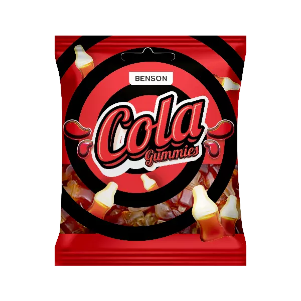
جيلى بينسون كولا -65 جم
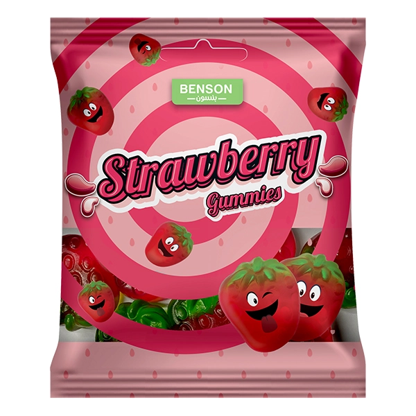
جيلى بينسون فراولة - 65 جم


قهوة بن برازيلى سادة فاتح - 100 جم

قهوة بن برازيلى سادة وسط - 100 جم

بن أبو عوف ساده وسط - 100 جم

بن ابوعوف محوج فاتح - 100 جم

بن ابوعوف محوج وسط - 100 جم


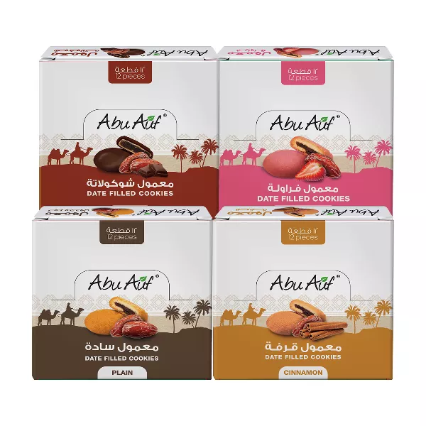
عرض معمول (1 سادة + 1 قرفة + 1 شيكولاتة + 1 فراولة)
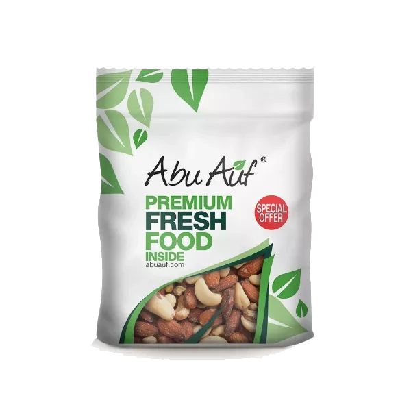
ابوعوف مكسرات مشكلة - 275 جم
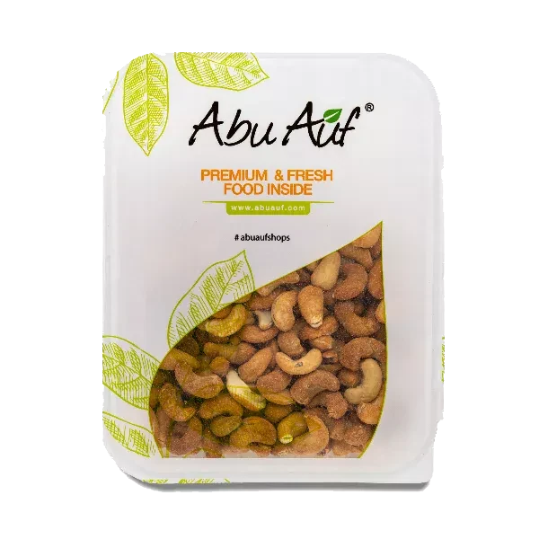
كاجو محمص -275 جم
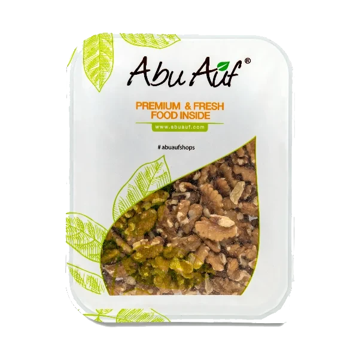
عين جمل ارباع - 275 جم
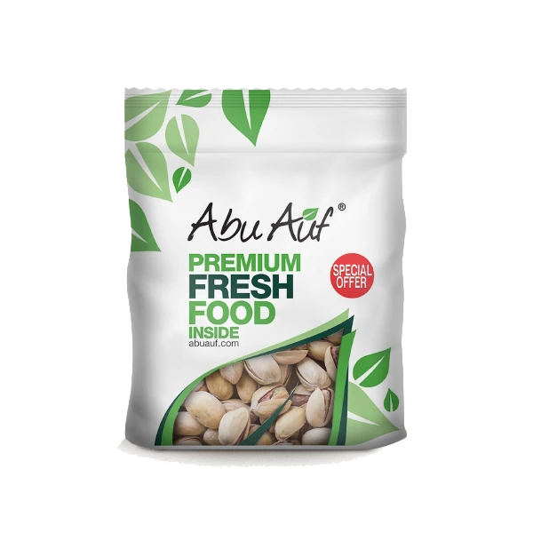
فستق محمص - 275 جم
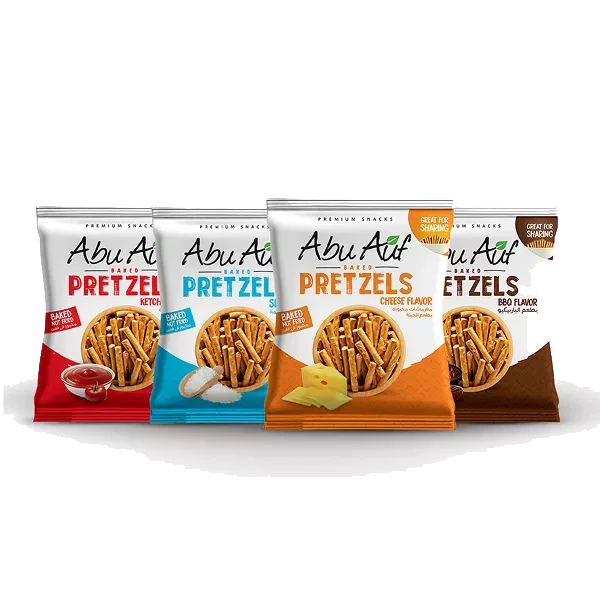
عرض بريتزل (اشتري 3 بسعر أقل)
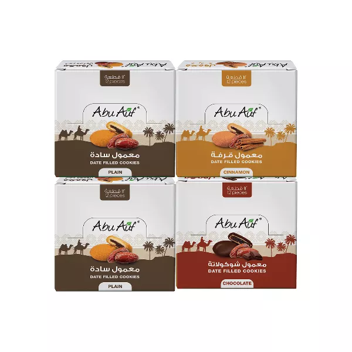
عرض معمول ( 2 سادة + 1 قرفه + 1 شيكولاتة)
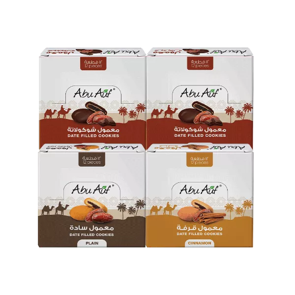
عرض معمول (2 شيكولاتة + 1 قرفة + 1 ساده)
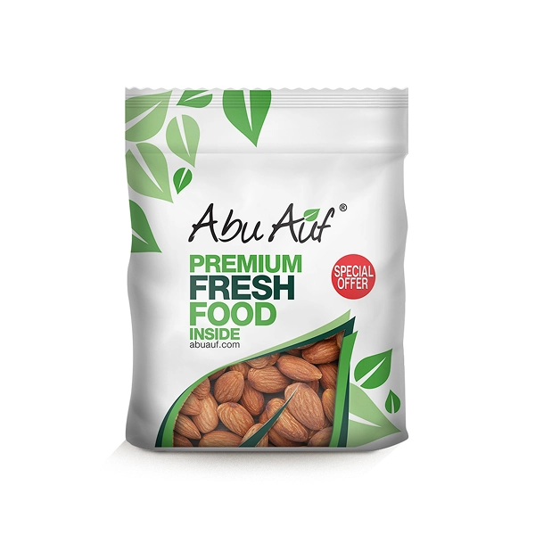
لوز محمص ملح -275 جم
خصم يصل إلى 20٪ على الهدايا
الهدايا
من علب التمور الفاخرة إلى صواني المكسرات وبوكسات المناسبات، جهّزنا لك تشكيلة هدايا تليق بكل مناسبة. اختَر هديتك الجاهزة أو نسّقها بنفسك، ونوصّلها بتغليف أنيق لأي مكان في مصر.
-
تغليف فخم جاهز للإهداء
علب وصواني وبوكسات بتصميم أنيق يليق بالمناسبة.
-
تشكيلة مختارة بعناية
تمور ومكسرات وفواكه مجففة بجودة أبو عوف المعتادة.
-
توصيل لكل محافظات مصر
نوصّل هديتك في الموعد اللي يناسبك.
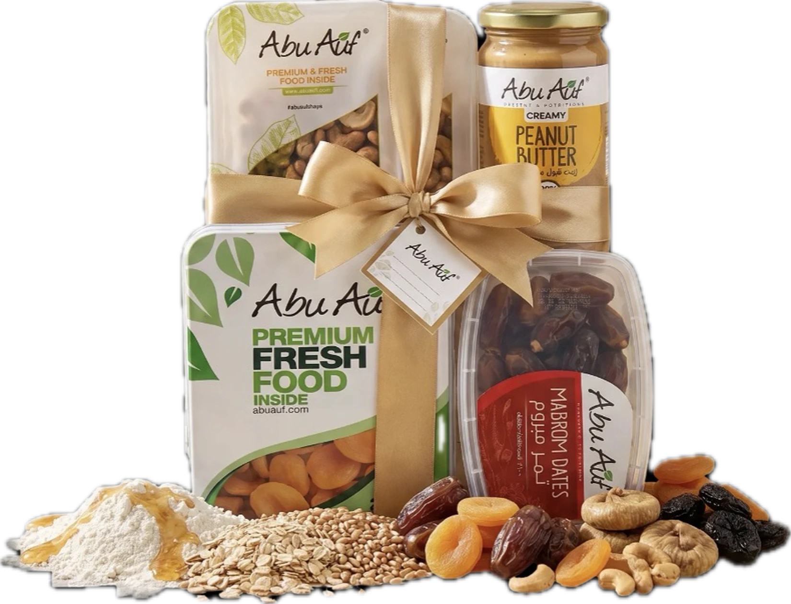
أراء العملاء
كل التعليقاتعن أبو عوف
نحن نغير مفهوم الأكل الصحي في جميع أنحاء العالم
تأسست شركة أبو عوف في عام 2010 وأصبحت من أشهر الأسماء في الأسواق لتقديم منتجات القهوة الطبيعية عالية الجودة والمكسرات وزبد المكسرات والأطعمة الصحية والفاكهة المجففة.. وأكثر. فلكل مُنتَج حكايته الخاصة؛ وبسبب اهتمامنا المستمر بالتفاصيل، فإن كل خطوة في عملية الإنتاج في أبو عوف تُدار بعناية لضمان إنتاج منتجات عالية الجودة يتم توصيلها بحب وملئها بالمكونات المغذية من الطبيعة الأم.
اعرف المزيد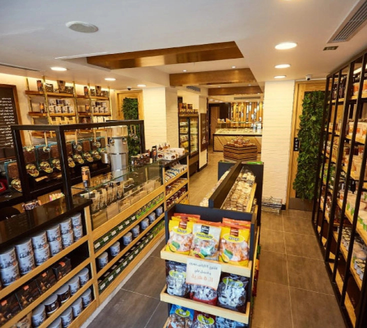
آخر الأخبار
كل المقالاتفوائد المكسرات النيئة لصحة القلب
المكسرات مصدر غني بالدهون الصحية والألياف، وإضافتها لنظامك اليومي أسهل مما تتخيل.
اقرأ المزيد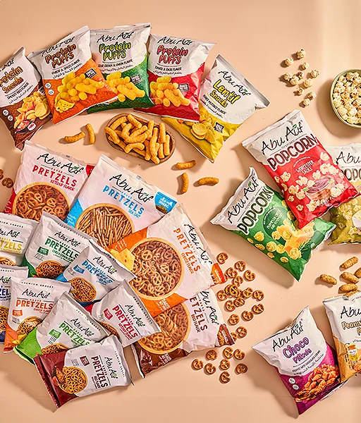
دليلك لاختيار درجة تحميص القهوة
من التحميص الفاتح للغامق، كل درجة ليها طابع مختلف. تعرف على الفرق واختار اللي يناسب ذوقك.
اقرأ المزيد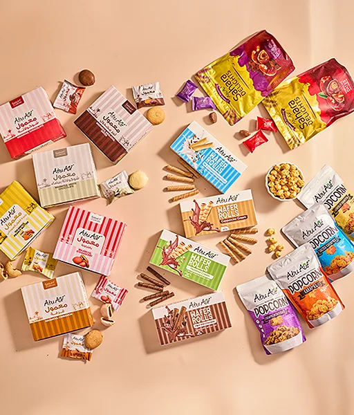
التمور: طاقة طبيعية في كل قطعة
التمور مش بس حلوة المذاق، ده كمان مصدر سريع للطاقة وغنية بالبوتاسيوم والألياف.
اقرأ المزيد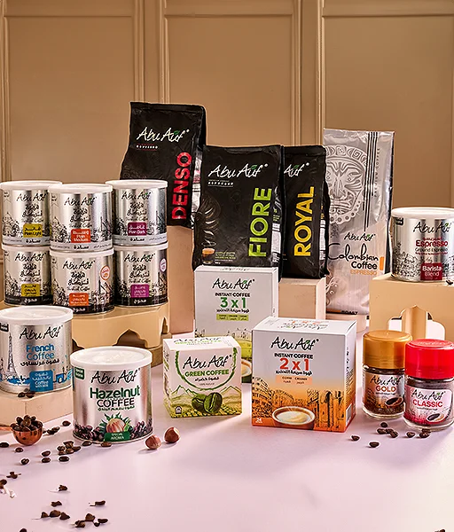
أشهي الوصفات من أبو عوف
جرانولا بار بالتمر والمكسرات
مخبوزات الطازة هي أحلى أختيار لنقنقة سريعة او لافكار لذيذة في اللانش بوكس، اختار النوع اللي تحبه.
شاهد الوصفة 25 د
25 د
قهوة مثلجة بزبدة الفول السوداني
وصفة سريعة تجمع بين القهوة المطحونة الطازة وزبدة الفول السوداني لمشروب غني ومنعش.
شاهد الوصفة 10 د
10 د